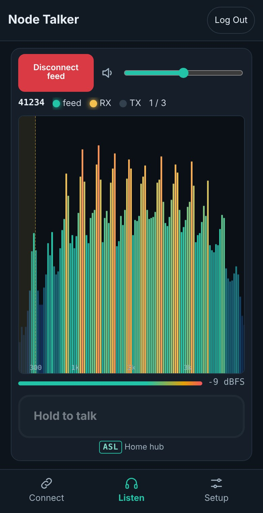
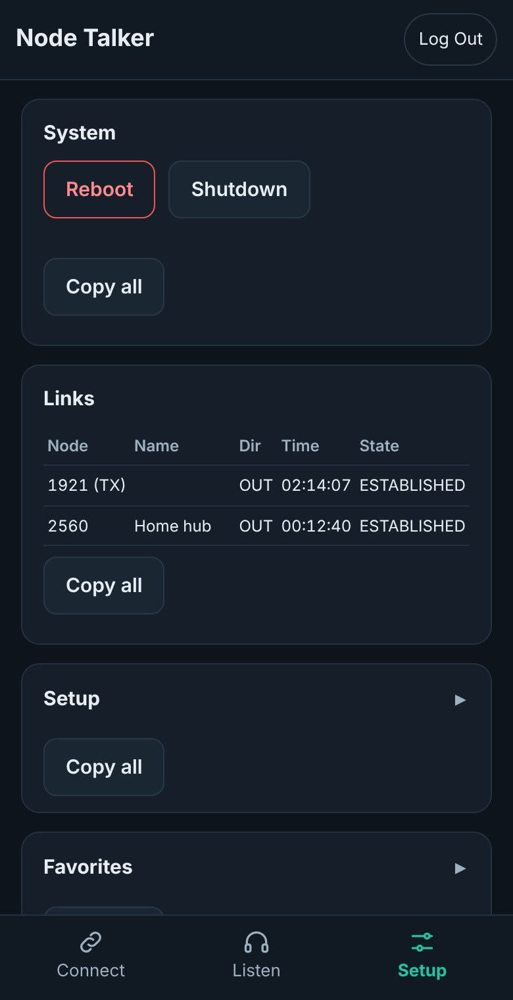
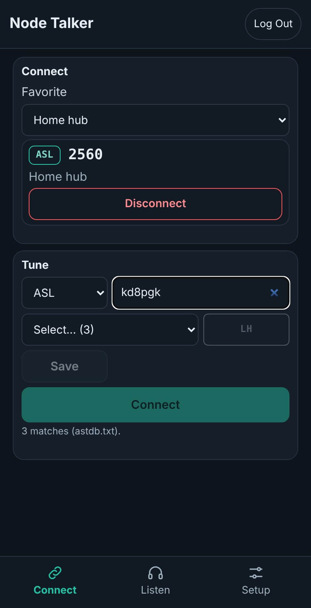
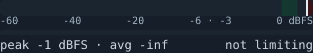

Node Talker Manual Receive and transmit audio, setting by setting
Node Talker (called Node Listen before 0.6.0) puts one node in your phone's browser: listen with
about half a second of delay, talk with push-to-talk, and connect or tune favorites. On Android, the optional
Node Talker Mobile app keeps both going with the screen off. This manual follows the audio both ways, from the radio to your ear and
from your mic to the air, and explains every setting along the way: where it acts, what it does, when to change
it, and how to measure the result with the built-in meters, tests and Audio check.
0.3.1 (Android 8.0 and later; Node Talker 0.6.11 or later for app audio; sections 7.9 and 11.1 list what 0.9.22 adds that the app does not yet use)
Dashboard
nodecontrol_pi02w_v9_3_94 / nodecontrol_v9_3_89
9.3.94-pi02w for DVSwitch through the Dashboard; 9.3.89 or later (both builds) for ASL, EchoLink and M17
Node Talker is a common tool: the same file runs on the Pi Zero 2 W and the
full build. The rest of the suite is covered in the user manual, docs/ASL-DVS_User_Manual.pdf.
KD8PGK · written with Claude (Anthropic) · CC BY-NC 4.0 · github.com/kd8pgk/ASL-DVS
Contents
In this manual
Part I · Getting going
1What Node Talker is
2Install and first setup
3The page
Part II · The audio, end to end
4The RX and TX chain, and the private node
5Receive (RX) audio
6Transmit (TX) audio
7Settings reference
8Getting levels right
9Reading the spectrum and the meters
Part III · Everything else
10Connect, Tune and favorites
11Node Talker Mobile (Android app)
12Troubleshooting by symptom
13From the internet, and security
14Reference: files, ports, settings keys, API, history
How to read it
If you only want to listen, chapters 2 and 3 are enough. To see how the pieces fit together, read chapter 4 first.
If you transmit, read chapters 6 and 8 before your first contact: most audio complaints come from levels that were
never set. Chapter 7 is the reference to come back to, and chapter 11 covers the Android app.
Each setting is marked with where it is kept:
Mark
Meaning
NODE
Kept on the Pi in /etc/asl_dvs/nodetalker.conf. Changes it for everyone who uses Node Talker on this node. Needs you to be logged in.
BROWSER
Kept in this browser only. Each phone, tablet or computer has its own, and changing it on one leaves the others alone. No login needed.
NOTELevels are given in dBFS: decibels below digital full scale.
0 dBFS is the loudest a sample can be; −6 dBFS is half that; −20 dBFS is a tenth. Speech is measured as an average
(what you hear as loudness) and as a peak (the loudest instant, which is what clips).
PART I
Getting going
What Node Talker does, how to set it up on a node, and a tour of the page.
What Node Talker is
Install and first setup
The page
Chapter 1
What Node Talker is
A web page served by the Pi on port 8993 that lets a phone, tablet or computer listen to one node,
transmit through it, and connect or tune a short list of favorites. Any browser will do; on Android, the optional
Node Talker Mobile app (chapter 11) also keeps receive and transmit going with the screen off.
Receive
The node's audio, about half a second behind, cleaned up on
the Pi (CTCSS and hum cut, levels evened out, squelch tails muted) and played in the browser with a live spectrum.
Transmit
Push-to-talk from the phone's microphone, processed in the page
(filter, leveler, noise gate) and sent to a private node, 1921, that Node Talker keeps linked to your node.
Connect
Up to 15 favorites: AllStar nodes, EchoLink stations, DMR, STFU,
YSF, P25, NXDN and D-STAR talkgroups and M17 reflectors, on its own or through the Dashboard.
Measure
Live meters, a mic test, a test through the node, and an Audio
check that watches a few minutes of real use and says what to change.
1.1What it needs
Item
Why
An ASL3 node (Asterisk with app_rpt)
Node Talker takes the node's audio from Asterisk and transmits through it.
Python 3.11 or later
As on Debian 12 and 13. Node Talker uses only the standard library.
A modern browser
Chrome, Firefox, Safari or Edge from the last few years. The microphone needs the https:// page.
Optional: Node Talker Mobile
The Android app (8.0 and later). Receive and transmit in the background, and push-to-talk on a plain http:// node (chapter 11).
Optional: DVSwitch and USRP2M17
For the digital favorites. Node Talker tunes them itself with dvswitch.sh and USRP2M17.ini.
Optional: the Dashboard (Node Controller)
When it runs on the node, every favorite goes through it, so it shows what is tuned.
1.2How it fits on the node
Node Talker adds two things to /etc/asterisk/rpt.conf, each with a backup first: one
outstreamcmd line in your node's stanza, which sends the node's audio to Node Talker, and a private
node 1921, which carries your transmissions in. Everything else stays as it was: the radio, the other links
and DVSwitch hear and send exactly what they did before. Chapter 4 follows both paths end to end and takes the
private node apart line by line.
Chapter 2
Install and first setup
Ten minutes from nothing to a first test transmission.
2.1Install
The installer (7.2.0 and later) asks whether to add Node Talker; instmon (2.58.0 and later) lists it with the
other tools and updates it. By hand: sudo python3 nodetalker_v….py --install. Over Node Listen, it moves the settings,
favorites and certificate across and retires the old service.
Open http://<pi-address>:8993. Node Talker moves you to https://. The certificate
is made on the Pi, so the browser warns once: accept it.
Log in with the Pi's root password.
On Android you can use Node Talker Mobile instead of the browser: install it, add the Pi's address and log in
on the page it shows (chapter 11).
2.2Receive: send the node's audio here
Setup tab, open the RX card (Node receive). The table lists each node in rpt.conf and its
outstreamcmd, if any.
Pick your node and press Send its audio here. That node becomes Node Talker's main node.
Press Restart Asterisk (it asks first; every link drops and reconnects).
Listen tab: within a few seconds the status line shows a green feed light, and audio plays when the
node passes any.
CAREFULA node takes one outstreamcmd. If yours already has
one (a Broadcastify feed, for example), Node Talker refuses rather than replace it.
2.3Transmit: add node 1921
Setup tab, open the TX: node 1921 card (Transmit node) and press Add node 1921. Node Talker adds a [1921]
stanza (your node's template, a USRP channel, no hang time, telemetry, courtesy tone or station ID) and a [nodes]
line, after a backup.
Press Restart Asterisk. Within 20 seconds the card's summary reads Set up and linked: Node Talker
links 1921 to your node and relinks it whenever it drops.
2.4First test transmission
Setup tab, TX: node 1921 card, Microphone: press Test mic, talk for 4 seconds, and read the report (section 9.2).
Adjust Mic gain until it says Good.
Press Test through the node. It transmits for 4 seconds, over the air and to every link, and plays back what
the node sent out.
Listen tab: hold the push-to-talk button and make a short call.
Chapter 3
The page
Three tabs along the bottom: Connect, Listen and Setup. The title bar and the tabs bar stay put;
only the middle scrolls, and the Listen tab is sized to fit the screen without scrolling.

Figure 3.1 · Screenshot (test signal). The Listen tab, with the spectrum as bars and the link line under push-to-talk.

Figure 3.2 · Screenshot (test node). The Setup tab: System and Links at the top, then the cards, each closed with its summary and a Copy all button.
3.1Title bar and login
Part
What it does
Version
Hidden on narrow phones.
Node Controller / InstMon
Opens the Dashboard, or switches to its tab if it is already open. When the Dashboard isn't running, the button opens InstMon instead.
Log In / Log Out
The root password. Five wrong tries from one address lock that address out for 5 seconds, doubling up to 5 minutes. A login lasts 12 hours from the last use.
With Listen without logging in on (Setup card), anyone who can reach the page gets the Listen tab
without the password but can't transmit or change anything.
3.2Listen tab, top to bottom
Part
What it does
Connect feed / Disconnect feed and volume
Starts and stops the audio (the button reads Connect feed while stopped and Disconnect feed while it plays; this is the page's own audio feed, not a link on the node); the slider beside it is the volume, 0 to 200 %. Listening starts by itself when the page opens (section 7.7).
Status line
Node number · feed light (green while audio arrives from Asterisk; "no feed 12 s" otherwise) · RX light (the node is passing audio) · TX light (someone transmits from Node Talker) · listeners now / limit · CHECK 2:13 while an Audio check runs. Hover over a light for details.
Spectrum
0 to 4 kHz as bars (chapter 9). Off in Playback (RX card). With app audio in Node Talker Mobile it stays empty: the app plays the sound, not the page.
Level bar
The node's level, or your mic level (red TX) while you hold push-to-talk.
Message line
Listening., Tap anywhere to start listening, or why the stream stopped.
Push-to-talk
Hold to talk, or tap to talk and tap to stop (chapter 6; Push-to-talk on this phone, TX card, picks which). Red TALKING with the time, or the guard countdown in tap mode; amber Busy: who 0:12 when someone else transmits; a 3-2-1 count in the spectrum's corner while Quick Key Guard holds it.
Link line
Under the push-to-talk button: what the node is linked to right now, with a mode tag and a name (for example ASL and the net's name, or the talkgroup or reflector of a tuned DVSwitch or M17 bridge). It reads the node's own links, not your Connect or Tune choice, so a link made from the Dashboard or another phone shows too. Other states: No ASL node linked, Bridge linked, nothing tuned, Not connected and Node unreachable. Node 1921 and the bridge nodes are never shown as the link itself; a tuned DVSwitch or M17 bridge follows an ASL name as a tag. Names come from your favorites, then the AllStar list (astdb.txt).
3.3Setup tab
At the top, always open: System (Reboot and Shutdown the Pi, each asked first) and Links
(the node's links, one per line; node 1921 is marked TX). Below them, eight cards that follow the audio from
one-time setup to everyday use: Setup (the node's settings, Save, Restart Asterisk), Favorites,
Digital, RX (Node receive, Playback, Audio levels and RX cleanup), TX: node 1921 (Transmit node,
Audio levels, Push-to-talk on this phone, Microphone, Headset / audio output), Audio check (with the Tone
test), Phone and Log. Tap a title to open or close it; every card starts closed, showing a one-line
summary such as Set up and linked or 300 Hz cut · auto level · gate light. Each card ends with a
Copy all button that copies the whole card as plain text, folded sections and field values included
(password fields are left out), which is the easiest way to show someone your settings. Chapter 7 goes through
them all.
3.4Connect tab

Figure 3.3 · Screenshot (test node). The Connect card with a linked favorite, and the Tune card searching AllStar nodes.
Connect: pick one of your favorites and press Connect; the button turns into Disconnect
while it is on.
Tune: anything that isn't a favorite. Pick the mode (ASL, EchoLink, DMR, STFU, YSF, P25, NXDN, D-STAR,
M17), search or type, then LH (Last Heard), Save as a favorite or Connect, which
turns into Disconnect while what you picked is linked. Chapter 10 has both.
The node's links are on the Setup tab (Links card).
PART II
The audio, end to end
Where the sound goes, what changes it at each step, which setting acts where, and how to set and check levels.
The RX and TX chain, and the private node
Receive (RX) audio
Transmit (TX) audio
Settings reference
Getting levels right
Reading the spectrum and the meters
Chapter 4 · RX + TX
The RX and TX chain, and the private node
The whole loop on one page: how the node's audio reaches your phone, how your voice gets back on
the air through a private node, and what each piece is. Chapters 5 and 6 then go through each direction step by
step.
Figure 4.1 · The loop. Receive (green) leaves the node through outstreamcmd; transmit
(red) comes back in through private node 1921, which is linked to your node like any other link, so your voice
goes out on the radio and to every link.
4.1The pieces
Piece
What it is
Where it is set up
Your node
The node in rpt.conf you picked with Send its audio here (41234 in the examples). Node Talker calls it the main node.
RX card (Node receive)
outstreamcmd
One line in your node's stanza. app_rpt starts the program it names and writes everything the node hears into it: 8,000 samples a second, 16 bits. The program is a small part of Node Talker that passes the audio on over UDP.
Receive card (writes the line)
Node Talker
The service on port 8993: the page, the audio pump, RX cleanup, the TX buffer and every safety rule. It sends the audio to each listener and takes transmit audio from one talker at a time.
Settings, Audio levels
The page, or the app
Plays the audio and records your microphone. In a browser the page does both; in Node Talker Mobile with app audio, the app does them and the page only shows what happens.
Microphone, Playback; the app's Audio settings
Private node 1921
A node of its own in rpt.conf with no radio: its "radio" is a USRP channel that Node Talker feeds. When Node Talker sends keyed audio to it, 1921 transmits, and because it is linked to your node, your node passes the audio to its radio and links.
Transmit card (writes the stanza)
The link 1921 → your node
An ordinary local IAX link (ilink 3, transceive). Node Talker makes it after Asterisk starts and checks it every 20 seconds, relinking if it drops.
Automatic
4.2What happens when you press push-to-talk
Press. The page (or the app) sends {"op":"key"} on the talk channel, the WebSocket
/api/talk, and starts the microphone at once. Audio captured before the answer is held (up to half a
second) so the first word isn't lost.
Checks on the Pi. Node 1921 must be set up and linked; nobody else may be transmitting from Node Talker;
with the busy lockout on, the node must be quiet (or your own unkey less than 1 s ago). Otherwise the answer is
denied with the reason, and the page says why.
Keyed. The answer {"ev":"keyed","tot":120} carries the TX time-out. The page turns red and
counts; the held audio and every 20 ms frame after it go to the Pi.
On the Pi. Frames collect in the TX buffer (120 ms by default), get TX gain if it is on, and leave every
20 ms as USRP packets with the key flag set, to 127.0.0.1:32018.
On the air. Node 1921 hears a keyed channel, so it "receives"; the link carries that to your node, which
keys its radio and sends the audio to every other link. Listen audio on your phone is muted meanwhile, and comes
back 1 s after you let go.
Release.{"op":"unkey"}. The Pi plays out what is left in the buffer, fades the last frame,
sends three unkey packets, and answers {"ev":"unkeyed","why":"release"}.
Or it stops by itself: at the TX time-out (timeout), when no audio has arrived for 1 s
(deadman), when the talk channel closes (closed), or at the guard timer in tap mode.
4.3And on receive
Everything your node hears, including your own transmission as the node passes it, goes out through
outstreamcmd to Node Talker, which cuts it into 20 ms frames, cleans it up once for everyone and streams
it to each listener over /api/listen. Your phone buffers a quarter of a second and plays it. Chapter 5
has the details and the timings.
4.4Example: the private node 1921, line by line
A private node is a node number from 1 to 1999. These numbers aren't registered with AllStarLink, so
nobody outside can connect to them: they exist only on your Pi, linked locally. That makes them the right tool for
feeding audio into a node from software. Node Talker uses 1921 and writes this when you press Add node
1921 on the TX card, Transmit node (here for a node 41234 that uses ASL3's usual node-main template):
; nodelisten: transmit node for the Node Listen page (remove it from that page)
[1921](node-main)
rxchannel = USRP/127.0.0.1:34018:32018
duplex = 0
hangtime = 0
althangtime = 0
holdofftelem = 1
telemdefault = 0
nounkeyct = 1
idrecording = |t(0,0,10,0)
[nodes]
41234 = radio@127.0.0.1/41234,NONE
1921 = radio@127.0.0.1/1921,NONE
Line
Why it is there
; nodelisten: …
The marker Node Talker (and the older tools) look for. Without it, Node Talker treats a [1921] as someone else's and won't touch it.
[1921](node-main)
The node, built on the same template as your node, so it gets the same defaults (codecs, timers, functions).
rxchannel = USRP/127.0.0.1:34018:32018
Its "radio" is a USRP channel on this Pi: it takes audio on UDP 32018 (from Node Talker) and would send on 34018. Nothing leaves the Pi.
duplex = 0
Half duplex, like a simplex radio: it doesn't repeat what it hears back out.
hangtime = 0, althangtime = 0
No hang after you unkey, so the node drops straight away.
holdofftelem = 1, telemdefault = 0
No telemetry (IDs, link announcements) from 1921 itself; your node keeps its own.
nounkeyct = 1
No courtesy tone when you unkey from Node Talker.
idrecording = |t(0,0,10,0)
Node 1921's own station ID is a 10 ms silent tone. Without this line 1921 would use the ID of the template it is built on, which on a stock ASL3 install is someone else's callsign, and send it on the air whenever it keys.
1921 = radio@127.0.0.1/1921,NONE
The [nodes] entry that lets your node find 1921 on this Pi. If Asterisk listens on another IAX port than 4569, the port is added (127.0.0.1:4570).
Checking it from the Pi
After Restart Asterisk, these show that 1921 exists and is linked:
sudo asterisk -rx "rpt lstats 41234"
NODE PEER RECONNECTS DIRECTION CONNECT TIME CONNECT STATE
---- ---- ---------- --------- ------------ -------------
1921 127.0.0.1 0 OUT 02:14:07:310 ESTABLISHED
sudo asterisk -rx "rpt nodes 1921"
************************* CONNECTED NODES *************************
T41234
To link it by hand (Node Talker does this by itself within 20 seconds):
sudo asterisk -rx "rpt cmd 41234 ilink 3 1921". To see it key while you talk:
sudo asterisk -rx "rpt stats 1921" shows Signal on input as YES. The T in front of
41234 means a transceive link: audio goes both ways.
NOTENode Talker 0.9.22 writes the idrecording line only into a new stanza. A 1921 that an earlier version added keeps its stanza as it is: add the line by hand, or press Remove and then Add node 1921 on the TX card (and Restart Asterisk).
CAREFULNode 1921 is fixed. If your rpt.conf already has a
[1921] for something else, the TX card refuses rather than overwrite it: move the other one to a
free private number (for example [1922], with its [nodes] line) first.
NOTEPrivate nodes follow their own rules elsewhere too: connecting a
favorite drops every other public link but never node 1921, the digital bridge nodes or any other private node
(chapter 10).
Chapter 5 · RX
Receive (RX) audio
From the radio to your ear: everything the node hears, cleaned up once on the Pi for every listener,
then buffered, played and drawn by each phone.
Figure 5.1 · The receive path. Amber steps run on the Pi once for everyone, blue steps on each
listener's own device. The dashed branch is measuring only: the spectrum, the level bar and the Audio check see the
audio before your volume.
5.1From the node to Node Talker
app_rpt mixes everything your node hears (the radio, every link, telemetry) and writes it, 8,000 samples a second
at 16 bits, to the outstreamcmd program, a small part of Node Talker that passes it on to
127.0.0.1:6200. The audio pump cuts it into 20 ms frames (160 samples) and sends one to every
listener every 20 ms. If audio arrives in bursts, up to 0.5 s waits in a queue; beyond that the oldest is dropped
and counted.
The status line's feed light is green while frames arrive. The RX light and the busy lockout use the
node's own level before any cleanup: a frame louder than −50 dBFS counts as audio, held for 0.6 s.
5.2RX cleanup on the Pi
Three steps, done once for every listener, change only what Node Talker's listeners hear. They are on by
default; chapter 7 has each setting in detail. Nothing is done while nobody listens, and near-silent frames
(under −65 dBFS) skip the work.
Step
What it does to the sound
Cut below 300 Hz
Removes hum and the lower CTCSS (PL) tones: 100 Hz drops by about 38 dB, 150 Hz by 24 dB, 250 Hz by 7 dB. Voice above 300 Hz is untouched.
Automatic level
Aims speech at about −20 dBFS: brings quiet stations up by as much as 18 dB and loud ones down by as much as 6 dB. It turns down within a frame or two, comes up at 3 dB a second (faster for the first half second of a new transmission), and holds still between transmissions. RX gain (Audio levels) is added on top.
Soft limiter
Up to about −1 dBFS nothing changes; above that, peaks are rounded off smoothly instead of clipped.
Squelch-tail gate
Mutes the burst of hiss after a station unkeys, and long silences. It tells hiss from voice by how alike neighbouring samples are: voice scores high, hiss low. A frame counts as hiss only when its samples one and two apart are both unrelated (flat hiss), so steady tones and loud "s" sounds are not muted. To mute a tail from its first frame, it holds the audio back 80 ms; when the gate opens it keeps the 40 ms before the opening and fades in, so the start of a word is not clipped.
5.3To your phone and out of the speaker
Format: 16-bit (128 kbit/s) by default, or μ-law (64 kbit/s) with 16-bit audio off. μ-law is the
phone-line format: half the data, a little more hiss on quiet audio.
Listen buffer: the page plays each 100 ms of audio a fixed time after it arrives, 0.25 s by default, so
a late packet doesn't make a gap. When audio arrives later than the buffer can cover, playback restarts
(a dropout), and the Audio check counts it.
Smooth playback: the page upsamples 8 kHz to the phone's own rate (44.1 or 48 kHz) with a proper filter,
which removes the faint sizzle some phones add.
Volume and then the speaker. The spectrum and meters see the audio before the volume.
5.4Where the half second goes
Stage
Delay
Asterisk to Node Talker
a few tens of ms
Squelch-tail gate look-ahead
80 ms (only with the gate on)
Page chunks
up to 100 ms
Listen buffer
250 ms by default (150 ms to 1 s)
Network
a few ms on Wi-Fi at home; more on mobile data
The total is about half a second at home. This is why the node's own audio comes back late when you test
through it, and why Node Talker ignores the busy lockout for 1 s after your own transmission.
Chapter 6 · TX
Transmit (TX) audio
From your mic to the air: shaped in the page, sent in 20 ms pieces, smoothed on the Pi and fed to
node 1921, which is linked to your node.
Figure 6.1 · The transmit path. Blue steps run in your browser with your device's settings,
amber steps on the Pi with the node's settings. The meters measure right after the leveler, so they show what
the Pi will get.
6.1In the browser
Browser processing. The phone's own Automatic gain, Noise suppression and
Echo cancellation, each switchable. They run before Node Talker sees the sound.
Mic gain, −12 to +24 dB: a plain volume control on the mic.
Resample to 8 kHz with a filter that cuts at 3.4 kHz, so sounds above it don't fold back as hiss or whine.
Voice filter (cuts rumble below about 250 Hz) or Radio voice (cuts below 300 Hz and lifts 2.5 kHz
by 4 dB, a crisper, more "radio" sound). With Radio voice on, the voice filter is skipped.
Noise gate (Off, Light, Strong): turns the mic down between words.
Leveler: a gentle compressor that keeps your level even, followed by a limiter that never lets a peak
past −1 dBFS.
Every 20 ms (160 samples) a frame goes to the Pi over the WebSocket /api/talk.
6.2On the Pi and on the air
TX buffer. The Pi waits until it has this much of your audio (120 ms by default) before it starts
sending, so short hiccups on the phone's connection don't make gaps. If it runs dry anyway, it sends silence,
refills, and counts a gap.
TX gain (−12 to +12 dB, with a soft limit at about −1 dBFS), only with Adjust audio levels here on.
The frames go as USRP packets to node 1921 (127.0.0.1:32018), keyed. On release the last frame is
faded out and three unkey packets follow. If the audio has a gap, the last frame is repeated faded out instead of a hard cut, and the frame after the gap fades in.
Node 1921 is linked to your node, so your audio goes out on the radio and to every link, like a local user's.
6.3The safety rules
Rule
What happens
Busy lockout
With Don't transmit while the node is busy on, a press is refused while the node passes audio (the RX light), except within 1 s of your own unkey.
One at a time
A second person's press is refused while someone transmits from Node Talker.
Time-out
The transmission stops at TX time-out (120 s by default). Let go and press again.
Audio stopped
If no audio reaches the Pi for 1 s (a dropped connection), it unkeys.
Guard timer
In tap-to-talk mode (and for the headset button), the transmission stops after the guard time (30–180 s, 60 s by default; never past the TX time-out), with two short beeps and a flashing count 10 s before.
Quick Key Guard
With Quick Key Guard on (it was called Wait 4 s after receive), push-to-talk is locked while the node receives and for 4 s after, so other stations can answer first.
Page hidden
In a browser, switching apps, locking the phone or leaving the page releases push-to-talk. In Node Talker Mobile a tap-to-talk transmission carries on and hold-to-talk releases (chapter 11).
Chapter 7
Settings reference
Every setting, card by card, in the order of the audio (the Favorites and Digital cards are in chapter 10). NODE settings
need you to be logged in and apply to everyone; BROWSER settings are this device's own.
7.1Node receive NODERX card
Control
What it does
Node table
Each node in rpt.conf and its outstreamcmd: Sends audio here, to another UDP port (press Send again), another program's line, one inherited from a template, or Not sending.
Send its audio here
Adds Node Talker's line to the picked node (taking it off any other node), backs up rpt.conf, and makes that node the main node. Takes effect after Restart Asterisk.
Remove
Takes the line out again (with a backup).
Restart Asterisk · Refresh
Restart asks first; every link drops and reconnects. Refresh rereads rpt.conf.
Line added · Feeder · UDP input
The exact line; whether Asterisk is running the feeder program now; whether Node Talker is listening on the UDP port.
7.2Transmit node and push-to-talk TX card
Control
What it does
State
Not set up, Set up and linked, Set up; linking, Asterisk does not know it yet: restart Asterisk, or what is wrong.
Add node 1921
Adds the [1921] stanza and its [nodes] line (with your IAX port if it isn't 4569); also repairs a wrong [nodes] line. Refuses if rpt.conf has a [1921] it didn't add.
Remove
Takes both out (asks first). Push-to-talk stops working.
Push-to-talk on this phone BROWSER
Setting
Default
What it does, and when to change it
Hold to talk / Tap to talk, tap to stop
Hold
Tap mode: one tap keys, the next unkeys; a tap within 0.5 s of keying is ignored. Space or Enter work the same way.
Guard timer
60 s
30, 60, 90, 120 or 180 s, for tap mode and the headset button (section 6.3).
Quick Key Guard
off
Locks push-to-talk while the node receives and for 4 s after, counting 3 to 0 in the corner of the spectrum, so other stations can answer first. It was called Wait 4 s after receive.
Save on this phone also keeps a copy on the Pi (ptt_mode, ptt_guard_sec,
ptt_rx_gap); a phone with nothing saved starts from that copy, and Restore from the Pi puts it
back. The guard timer never runs past the node's TX time-out.
7.3Setup card NODE
Setting
Default
Range
What it does, and when to change it
Web port
8993
1024–65535
The page's port. Change only if something else uses 8993. Restarts Node Talker.
UDP port
6200
1024–65535
Where the node's audio arrives. Changing it rewrites the outstreamcmd line too; restart Asterisk.
Max listeners
3
1–10
How many people can listen at once. Each takes 64 or 128 kbit/s of upload on your internet line when they're away from home.
TX time-out (s)
120
30–600
The longest one transmission can last.
HTTPS
on
on / off
Needed for the microphone. Off only for a listen-only node. Restarts Node Talker.
Don't transmit while the node is busy
on
on / off
The busy lockout (section 6.3). Turn it off only if a constant noise on the node keeps it busy.
Listen without logging in
off
on / off
Anyone who can reach the page may listen (not transmit).
Tune card on this phone: sliders for the Tune card's gap, height and text size (kept in this browser), with Default spacing. Save keeps the node settings above; Restart Asterisk asks first and drops every link while Asterisk comes back.
7.4Audio check card BROWSER
Length (2, 5, 10 or 15 minutes; 5 by default), Start check, Stop, Copy all and Prompt me to
talk during the check (on by default). The report has the Receive and Transmit tables, a Per minute strip,
What to change with Apply/Undo, and the buttons Compare with last check, Copy
report, Download report and Compare with a saved report. The Tone test is further down the
same card. Section 8.4 explains the check and section 8.5 the tone test.
7.5Audio levels NODERX and TX cards
The settings are split by direction: Adjust audio levels here, Mic to node (TX), TX buffer and
the reset button are on the TX card; Node to phone (RX), Listen buffer and RX cleanup are on the RX
card. Each card has its own Save.
Adjust audio levels here
Off by default. Off, the four settings below are not used: no TX or RX gain, a 0.25 s listen buffer and a 120 ms TX
buffer. On, they take effect. The RX cleanup further down works either way.
Setting
Default
Range
What it does, and when to change it
Mic to node (TX)
0 dB
−12 to +12 dB
Gain on every transmission from Node Talker, on the Pi, for everyone. Use it when all phones come out too quiet or too loud on the air (the node test shows it). For one phone, use its Mic gain instead.
Node to phone (RX)
0 dB
−12 to +12 dB
Gain on what every listener hears, after Automatic level. Use it when audio is quiet even with Automatic level on, or when you turn Automatic level off.
Listen buffer
0.25 s
0.15, 0.25, 0.5, 1 s
How far behind real time the page plays. Larger rides over a weak connection without dropouts; smaller is closer to live. 0.15 s on good Wi-Fi, 0.5–1 s on mobile data.
TX buffer
120 ms
60, 120, 200, 300 ms
How much of your audio the Pi collects before sending. Raise it if transmissions have gaps (TX gaps, the Audio check); lower it for a slightly quicker start.
Below them: TX peak (the loudest point of the current or last transmission, after TX gain), RX level
(the node's level, before cleanup) and TX gaps. Aim for TX peaks of −6 to −3 dBFS on normal speech.
RX cleanup
Setting
Default
What it does, and when to change it
Cut below 300 Hz
on
Removes hum and CTCSS tones from what listeners hear (section 5.2). Off only to hear the tones themselves, for example to check which one a station sends. It costs the most of the three on the Pi.
Automatic level
on
Evens out quiet and loud stations. Off to hear stations at their real levels, or for an exact node test.
Squelch-tail gate
Light
Light mutes the hiss after a station unkeys and long silences. Strong also mutes shorter and quieter hiss: use it on a node with noisy links, and turn it back if the start of speech is ever clipped. Off passes everything, with no 80 ms delay.
Processing load: how much of one CPU core the cleanup took over the last 5 seconds. On a Pi Zero 2 W it
should stay at about 10 % or less while audio passes. Save keeps everything on the card; Reset gains and buffers to defaults (TX card) puts
them back (Save to keep it). A favorite can carry its own RX and TX gain (section 10.1); while it is on, those
values replace the two gains above, even with Adjust audio levels here off.
7.6Microphone BROWSERTX card
Setting
Default
What it does, and when to change it
Leveler
on
A compressor and limiter in the page: quiet speech comes up (by up to 9 dB), loud speech is held back, and nothing passes −1 dBFS. Leave on; turn off only if you level the audio somewhere else.
Automatic gain
off
The browser's own leveling. It fights the leveler and undoes Mic gain, so leave it off when the leveler is on.
Noise suppression
on
The browser removes steady background noise (fans, traffic). Turn off if your voice sounds watery.
Echo cancellation
off
Rarely needed: listen audio is muted while you talk. Turn on only with a speaker right next to the mic.
Cuts below 300 Hz and lifts 2.5 kHz for a crisper sound that cuts through on FM. Leave off if your audio already sounds bright, or if the radio adds pre-emphasis.
Noise gate
Off
Light opens above −45 dBFS and turns the mic down 15 dB between words; Strong opens above −35 dBFS and turns it down 30 dB. Use Light in a noisy room. If the starts of words are clipped, go back a step (the Audio check measures it).
Mic gain
0 dB
−12 to +24 dB. The main control for your level: set it with the mic test (section 8.2).
Test mic and Test through the node are in this section of the TX card; chapter 9 shows their meters and reports.
7.7Playback BROWSERRX card
Setting
Default
What it does, and when to change it
Show the spectrum
on
The bars on the Listen tab. Off saves battery on an old phone.
Start listening when the page opens
on
Plays as soon as the page loads or you log in. Most browsers need one tap first; the page asks for it.
Keep the screen on
off
Shown where the browser supports it: keeps the screen awake while you listen or talk.
16-bit audio
on
Cleaner on quiet audio, 128 kbit/s instead of 64. Turn off on a slow or metered connection.
Smooth playback
on
Filtered upsampling, no sizzle. Turn off only on a very slow device.
7.8Log card
What Node Talker has done: listeners, logins, transmissions (with length, gaps and why they ended), connects and
every rpt.conf edit. Fetched only while the card is open.
7.9Phone card BROWSER
Read-only: nothing here changes a setting. It lists what this phone's browser can tell the page about audio, so you
can see why a setting has no effect. Refresh rereads it, and Copy all puts it in a message when you ask
someone for help.
Whether the page is secure (https://; the microphone and device names are blocked if not), the network
state, the sound system's rate and playback latency, and whether the browser can pick the output.
The output in use, the microphones and output devices found, and the microphone in use (names appear once the
microphone has been allowed).
Which of echo cancellation, noise suppression and automatic gain the browser can do, and the page's own Leveler,
Automatic gain, Noise suppression, Echo cancellation, Voice filter / Radio voice, Noise gate and Mic gain.
A star (*) marks a value you can change on the phone. A page can't read the phone's media volume, so that row
says so unless the app reports it.
Inside Node Talker Mobile a second table, Node Talker Mobile, shows the app version and whether the audio is
app audio or page audio, and rows the app doesn't use are marked not used: app audio. The app's own settings
(output, receive buffer, echo and noise filter, microphone rate, phone volume, battery saver, keep the screen on)
appear once the app reports them; Node Talker Mobile 0.3.1 does not yet, and the table says so.
7.10Settings that are grayed out
A setting that can't do anything right now is grayed out, and a note under its section says why, so you don't spend
time on a control that has no effect. The page rechecks every 2 seconds.
Grayed out
Because
The page's playback options, its microphone processing, Test mic, Test through the node, output and microphone picking, the headset button and Start check
The app is doing the audio (Node Talker Mobile with app audio).
The microphone options
The page isn't the https:// one, so the browser blocks the microphone.
Echo cancellation, Noise suppression, Automatic gain
This browser can't do them.
Voice filter
Radio voice is on, which includes it.
The gain and buffer fields
Adjust audio levels here is off.
Chapter 8
Getting levels right
A short procedure for each direction, in the order that avoids fighting yourself. Do it once when
you set the node up and again when you change phones, mics or radios.
8.1Who hears which gain
Gain
Where
Who it changes
Radio RX / TX levels, DVSwitch gains
SysMon, Tune tab; DVSwitch
Everyone: the air, every link, Node Talker.
Automatic level, RX gain, Cut below 300 Hz, gate
Node Talker, Audio levels NODE
Node Talker's listeners only.
TX gain
Node Talker, Audio levels NODE
Transmissions from every Node Talker user.
Mic gain, leveler, filters, gate
Node Talker, Microphone BROWSER
Transmissions from this device only.
Volume
Listen tab BROWSER
What you hear on this device only.
TIPFix things where they start. If the node's own audio is wrong on the air
and on links, fix it in SysMon (radio) first; Node Talker's settings only paper over it for Node Talker's users.
8.2Transmit, step by step
Start clean. Microphone (TX card): Leveler on, Automatic gain off, Noise suppression on, Voice filter on, Noise gate Off, Mic gain 0 dB.
Test mic. Hold the phone where you will hold it on the air and talk normally for 4 seconds. Targets: speech −24 to −12 dBFS, peaks −8 to −1 dBFS, limiter working under 20 % of the time. Change Mic gain by the amount the report suggests and test again until it says Good.
Noise. If the report says Noisy, move to a quieter spot or closer to the mic first; then try Noise gate Light.
Test through the node. For an exact comparison, turn Automatic level off for a minute (Audio levels). Came back should be within about 6 dB of Sent. If every phone comes back quieter or louder by the same amount, use TX gain; if the radio side is off, use SysMon's Tune tab. Turn Automatic level back on.
On the air. Run an Audio check during a real contact or net (section 8.4) and apply what it suggests.
8.3Receive, step by step
The node first. With the radio's own levels right (SysMon, Tune), the RX level in Audio levels (RX card) should peak around −10 to −3 dBFS on a strong local station.
Look at the spectrum. A steady line or band below 300 Hz is a CTCSS tone or hum; with Cut below 300 Hz on it should be faint or gone. Thin bright lines right after transmissions are squelch tails: the gate should remove them.
Leave Automatic level on. If speech is still quiet (the Audio check says so), raise RX gain by the amount it suggests.
Dropouts. If audio breaks up on your connection, raise the Listen buffer a step.
8.4The Audio check
The quick tests show four seconds; the Audio check shows a few minutes of real use, with several stations and
several of your own transmissions.
Setup tab, Audio check card: choose a length and press Start check. The screen is kept awake while a
check runs (a warning shows if the browser can't).
Go to the Listen tab and use the node as usual: listen, talk, listen. The status line shows CHECK 2:13; tap it to come back.
With Prompt me to talk during the check on (the default), the page asks you to talk at 0:30 and every 2
minutes after, so the transmit side has real speech to measure.
When it ends (or you press Stop), open the card. Each row is green, amber or red against its target, and
What to change lists suggestions with amounts, ordered by how much audio they affect: lost or distorted
audio first, then levels, then noise and filters. At most two carry Apply at once; the rest are marked
Later. Level suggestions wait for 5 seconds of speech.
Press Apply on a suggestion to make the change (Undo puts it back), run another check, and press
Compare with last check to see the difference.
Figure 8.1 · Screenshot (example data). An Audio check report: stations 15 dB apart, hum below
300 Hz, dropouts and squelch tails, each with a suggestion below.
Row
Target
Typical fix
RX speech level
−24 to −14 dBFS
Automatic level; RX gain
RX peak
below −1 dBFS
Lower RX gain, or Automatic level
Stations, quietest to loudest
under 8 dB
Automatic level
Below 300 Hz
under −25 dB
Cut below 300 Hz
Dropouts
none
Larger Listen buffer; better connection
Squelch tails heard
none
Gate Light, then Strong
Pi load
under 25 %
Cut below 300 Hz off
TX speech level · peak
−24 to −12 · −8 to −1 dBFS
Mic gain
Voice above background
over 20 dB
Noise suppression; Noise gate Light
Limiter working
under 20 %
Lower Mic gain
Gate closed while talking
under 10 %
Noise gate a step lower
Transmissions with gaps
none
Larger TX buffer; Wi-Fi
Peak at the Pi
below −1 dBFS
Lower TX gain
Beyond the rows above, the report has:
Per minute: one bar per minute (up to 15) for speech level, noise floor, Pi load and dropouts, each on a
fixed scale so two checks can be compared by eye.
The Pi: its temperature and any throttling, sampled every 10 seconds (kept in memory, not saved).
Transmit timing: the push-to-talk round trip from the page, and the time from key to first audio on the Pi.
Node cross-check: the node's own count of key-ups since it started (rpt stats) beside the
transmissions your phone made. If the format of rpt stats isn't recognised, the raw lines are shown instead.
Download report saves the report as a JSON file on the phone, and Compare with a saved report loads
one and compares it with the current check. Nothing is kept on the Pi. (In Node Talker Mobile 0.3.1 the download
doesn't work; use Copy report.)
NOTEThe check keeps only numbers, never audio, and only in this browser.
It carries on if you switch tabs or reload; time with the page closed or the phone asleep is shown as paused.
8.5The tone test
The Audio check measures real speech; the tone test measures the path itself. On the Audio check card, Run tone
test sends your station ID, a series of tones and the ID again through node 1921, listens to what comes back
from the node, and shows the response tone by tone: raw from the node, and after the Pi's RX cleanup. Use it to find
out which frequencies the radio path passes, what the cleanup does to them, and how long the round trip takes.
Setting
What it does
Tone length
0.5, 1 (default) or 2 seconds for each tone.
Tones (Hz)
Blank uses 150, 300, 500, 1000, 1500, 2000, 2500, 3000 and 3400 Hz. Type your own list: up to 12 tones, each 100 to 3800 Hz.
With the default settings the test keys the node for about 20 seconds: half a second of quiet (the noise floor), a Morse station ID
(DE and your callsign), the tones at −10 dBFS with a pause between, then the ID again. Your callsign comes from
the Digital card, or failing that from USRP2M17.ini or the Dashboard; the test refuses without one.
CAREFULThe tone test transmits. It goes out over the air and to every link
on the node, like a Test through the node. It runs from the local network only (Run and Stop), refuses while the
channel has audio above the activity level or the node is already transmitting, and is limited to 60 seconds and to the
TX time-out less 5 seconds.
The report shows a one-line summary (whether a return was heard and its delay, the usable band, the gains in force and the raw noise floor) and a table with one row per tone:
Column
Meaning
Sent dB
The level sent, after TX gain.
Raw dB · Raw vs sent
What came back from the node before cleanup, and how far that is from what was sent.
After cleanup dB · Cleanup effect
The same tone after the Pi's cleanup (measured 80 ms later when the gate is on, its delay), and the difference from raw.
Freq err Hz
How far the returned tone is from the one sent.
Drops
Breaks in the returned tone.
The usable band is where the raw response stays within 6 dB of the 1 kHz tone (or of the strongest tone if 1 kHz
isn't in your list). Warnings appear under the table, for example when nothing came back above the noise floor or when
the delay can't be trusted. The report stays in memory on the Pi until the next test and is never saved to disk.
8.6Common mistakes
Two automatic gains. The browser's Automatic gain and the leveler fight; leave the browser's off.
Mic gain into the limiter. More mic gain past the point where the limiter works most of the time adds
distortion, not loudness. If the report says the limiter works more than 30 % of the time, turn it down.
Fixing the radio in Node Talker. RX gain and Automatic level only change Node Talker's listeners; a bad
radio level still goes to every link.
Radio voice on a bright radio. If the radio adds pre-emphasis, Radio voice makes it shrill.
Judging levels through the speaker. Phone volume and speakers vary; trust the meters.
Chapter 9
Reading the spectrum and the meters
The spectrum shows what the node passes, the meters show levels, and the test reports say what to
change.
9.1The spectrum
About 96 bars across, 0 to 4 kHz (marks at 300 Hz, 1, 2 and 3 kHz), redrawn about 25 times a second (Figure 3.1).
A bar's height and colour are its loudness on a decibel scale: dark blue is quiet, teal moderate, amber and red loud.
The strip below 300 Hz is shaded. Because the scale is in decibels, even a faint sound draws a visible bar: what
matters is how the bars move. (Before 0.6.12 the spectrum could also be a waterfall; it is bars only now.)
What you see
What it is
What to do
Bars rising and falling between 300 Hz and 3.5 kHz with the words, a hump or two around 500–1,500 Hz, the shaded strip quiet
Good speech
Nothing.
One bar in the shaded strip that stands still while a station talks, gone when it stops
A CTCSS (PL) tone
Cut below 300 Hz (Audio levels).
A few bars in the shaded strip (60, 120, 180 Hz or 50, 100, 150 Hz) that stay up between transmissions too
Hum
Cut below 300 Hz; on the node, check the radio interface's grounding.
Every bar across the whole width jumps up at once for a moment after a station unkeys
A squelch tail (hiss)
Squelch-tail gate Light, then Strong.
The bars stay well up across the whole width all the time
Noise: an open squelch, a noisy link
The radio's squelch; the gate.
Bars high up to 3–4 kHz on loud speech, a flat top on the level bar
Clipping (overdriven audio)
Lower the gain where it starts (chapter 8).
9.2The live meter and the mic test report

Figure 9.1 · Screenshot. The live meter during a test.
The bar runs from −60 to 0 dBFS. The teal fill is the average, the amber mark the peak, and the thin white mark
the highest peak of the last second. The green zone (−6 to −3 dBFS) is where peaks belong; above −1 dBFS is red.
The thin bar underneath shows how far the leveler's limiter is turning you down; the text says limiting 4.2 dB
or gate closed.
Figure 9.2 · Screenshot (fake test mic). The mic test report: the level over 4 seconds (with a playhead during playback), the numbers, and what to change.
Number
Meaning
Peak
The loudest instant. Should be −8 to −1 dBFS.
Speech
The average while you talk. Should be −24 to −12 dBFS.
Background
The quietest tenth of the recording: the room. silent means digital silence.
Voice above background
Speech minus background. Over 20 dB is clean; under 15 dB sounds noisy.
Limiter working
How much of your speech the limiter was turning down. Over 30 %: too much mic gain.
Gate closed while talking
Shown with the noise gate on. Over 10 %: the gate is eating words.
9.3The node test report
Figure 9.3 · Screenshot (test node). What was sent and what came back, lined up in time.
The test transmits for 4 seconds through the node and records what the node sends back out. The two strips are
lined up so the same words sit above each other; Round trip is how long that took (about half a second
at home). Difference compares the speech levels: within about 6 dB is fine.
With Automatic level on, what comes back has been evened out, so the report says so and doesn't judge the
difference; turn Automatic level off for a minute to compare exactly.
A came-back peak near 0 dBFS means something on the node's side is clipping: TX gain, or the radio and
DVSwitch levels in SysMon.
9.4The level bar while you talk
While you hold push-to-talk, the level bar under the spectrum shows your mic level in red, labelled TX; when
you let go it goes back to the node's level. Peaks should reach the green zone of the live meter, about −6 to
−3 dBFS, on normal speech.
PART III
Everything else
Links and favorites, the Android app, fixing problems, reaching Node Talker from outside, and the reference tables.
Connect, Tune and favorites
Node Talker Mobile
Troubleshooting by symptom
From the internet, and security
Reference
Chapter 10
Connect, Tune and favorites
10.1Favorites
Setup tab, Favorites card: up to 15. Add row, pick the mode, type the number and a name, and
Save favorites. From the Dashboard… copies one of the Dashboard's favorites (a DMR one brings its
network). They are kept in /etc/asl_dvs/nodetalker_favorites.conf, in the Dashboard's
asl_dvs.conf format, and listed on the Connect tab in that order.
Mode
Type
ASL
The node number, up to 7 digits.
EchoLink
The station's own number, up to 6 digits.
DMR
The talkgroup, and its network from the list on the Digital card.
STFU, YSF, P25, NXDN
The talkgroup or reflector, as DVSwitch tunes it.
D-STAR
The reflector and module: REF001 C (kept as the tune string REF001CL).
M17
The reflector and module: M17-USA C, or M17-USA @ALL (just M17-USA means every module).
Gain per favorite. Each row has two small boxes, RX dB and TX dB (whole decibels; blank means
use the global setting). While that favorite is the active link, its values replace the global Node to phone
(RX) and Mic to node (TX) gains, even with Adjust audio levels here off. They go back to the global
values when you disconnect the favorite, connect another one, or restart Node Talker. Use them for a net that is
always quieter or louder than the rest. They are kept in the favorites file as |rx= and |tx=
after the row.
10.2The Digital card and DMR networks
The Digital card on the Setup tab shows who does the tuning (Solo, or the Dashboard), what was found
(dvswitch.sh, Analog_Bridge, USRP2M17, M17Hosts.json) and the gateway services. It sets
the digital and M17 bridge nodes and the M17 callsign; left empty, they are found on their own (the bridge nodes from
the USRP ports in rpt.conf, the callsign from USRP2M17.ini). DMR networks holds up
to 10 networks, each a name, address:port, password and optional dashboard link; Copy from Node
Controller adds the Dashboard's. The page never shows a password: leave it empty to keep the saved one.
Favorites file, on the Favorites card, downloads or uploads nodetalker_favorites.conf; an upload with a bad line is
refused whole.
10.3Connecting
Connect tab: pick a favorite and press Connect; it turns into Disconnect while that favorite is on.
The page switches to the Listen tab and says Connecting to … or Tuning … under the push-to-talk
button; if it fails, it goes back to the Connect tab with the reason. Links are always made from Node Talker's main
node, one at a time: connecting an ASL or EchoLink favorite drops the node's other public links first, and
tuning a digital favorite drops every link but that mode's bridge node. Private nodes (1999 and below: node 1921,
the bridge nodes, a private hub) are never dropped, and permanent links are dropped with ilink 11. For
ASL and EchoLink, Node Talker watches the node's links for up to 15 seconds and says how it went:
Result
Meaning
Node 41234 is connected to ASL 2000.
The link is up.
ASL 2000 has not answered after 15 s; node 41234 is still trying.
The far node may be offline or busy.
Node 41234 did not connect to ASL 2000: no link after 15 s.
Check the number; the far node may be refusing connections.
With the Dashboard on the node (its node is Node Talker's main node), every favorite goes through it, so the
Dashboard switches to that mode and shows it: ASL, EchoLink and M17 (Dashboard 9.3.89 or later) and the DVSwitch
modes (Dashboard 9.3.94-pi02w or later; an older Dashboard gets update Node Controller). When the Dashboard
has no DMR network for a DMR favorite, the Connect tab asks: Add it to Node Controller and tune, Tune this
once (the Dashboard joins it for this tune only), or Cancel.
Solo (the Dashboard not running), Node Talker tunes on its own, the way the Dashboard does. A DVSwitch
favorite starts the mode's gateway if needed, runs dvswitch.sh tune disconnect, mode, for
DMR tune password@address:port (skipped when that network is already joined), then tune the
talkgroup, and links the digital bridge node. An M17 favorite writes USRP2M17.ini with the address from
M17Hosts.json, restarts usrp2m17 and links the M17 bridge node. One digital favorite is on
at a time; tuning one drops linked ASL and EchoLink favorites.
10.4The Tune card
For anything that isn't a favorite, laid out like the Dashboard's search cards (Figure 3.3):
Mode · Network (DMR) or Module (D-STAR, M17) · Search · the list · LH ·
Save · Connect, wrapping onto more lines on a phone. Connect turns into Disconnect while
what you picked is linked.
Mode
The list comes from
Search by
ASL
/var/lib/asterisk/astdb.txt, searched on the Pi as you type (2 characters or more, up to 200 matches)
Node number (a number alone matches nodes starting with it), call or place
EchoLink
Asterisk's station list (echolink dbdump, kept 5 minutes)
Number or call
DMR
No list: type the talkgroup; pick the network
STFU
TGList_BM.txt
Talkgroup, ID or name
YSF
YSFHosts.txt
Name, number or address
P25, NXDN
P25Hosts.txt, NXDNHosts.txt
Talkgroup or host
D-STAR
The DPlus, DExtra and DCS host lists
Reflector (REF001 C) or callsign; module from the Module menu
M17
M17Hosts.json
Reflector; the Module menu offers that reflector's modules and All
Every word typed must match; when one entry is left, it is picked. A talkgroup, room, reflector or node number
can also be typed when it isn't in the list, or when the list is missing.
Connect works as for a favorite, through the Dashboard when it runs; a DMR network the Dashboard lacks
gets the same add / tune once / cancel question.
LH opens Last Heard: the network's link for DMR, the reflector's own link or address, or the AllStar
stats page for an ASL node. Greyed out when there is none.
Save adds the pick to the favorites (up to 15). Disconnect (the Connect button while the pick is
linked) ends what DVSwitch or M17 has tuned, or, for ASL and EchoLink, drops the link to the node picked or typed.
The card shows what is tuned.
The card starts on the mode last tuned (ASL when there is none) and keeps your mode, network, module, search and
pick while the page stays open; its spacing (gap, height, text) is set in the Setup card.
10.5Links and Disconnect
The Links card at the top of the Setup tab lists the node's links, one per line, with the favorite's name.
Node 1921 is marked (TX). On the Connect card, Disconnect drops that favorite only; other links stay.
Chapter 11 TESTING
Node Talker Mobile (Android app)
An optional Android app that opens only your Node Talker page and runs the audio itself, so
receive and transmit keep going with the screen off or while you use other apps. Everything else is the same page
you know from the browser.
11.1Browser or app
In a browser
Node Talker Mobile (app audio)
Screen off, other apps
Audio stops when the page goes to the background
Receive keeps playing; a tap-to-talk transmission carries on
Microphone
Needs the https:// page
Works on http:// too
Certificate warning
Each browser warns about the Pi's own certificate
Asked once, by fingerprint; no warnings after that
Phone calls
Depends on the browser
Receive pauses for the call, transmit unkeys
Other apps' sound
Depends on the browser
Plays alongside music or video
Spectrum on the Listen tab
Yes
Empty (the app plays the sound, not the page)
Download report (Audio check)
Saves a JSON file on the phone
Not yet: use Copy report
Microphone processing
The page's leveler, filters and gate (section 6.1)
Android's echo and noise filter, plus the page's Mic gain
11.2Install and update
On the phone, open the repository's Releases page
(github.com/kd8pgk/ASL-DVS/releases), take the newest android-v… release and download
NodeTalker-…-debug.apk.
Open the file. Android asks once to allow installs from the browser; Play Protect may warn about an unknown
app: More details → Install anyway.
Updates install over the old app and keep your nodes and settings. Going to 0.3.1 from an older build needs one
uninstall first (the older builds each had their own signing key).
NOTEApp audio needs Node Talker 0.6.10 or later for receive and 0.6.11
or later for transmit on the node. With an older Node Talker the app still opens the page and uses page audio.
11.3Nodes and the certificate
The first screen lists your nodes. Add node: a name, the Pi's address (192.168.1.50 or
node.local), port 8993, and HTTPS. A full address such as
https://node.local:8993/ can be pasted into the address field. Tap a node to open it; press and hold
to edit, delete or forget its certificate.
HTTPS by itself. If you save a node as plain HTTP and its Node Talker uses HTTPS, the app follows Node
Talker's switch to HTTPS and saves the node that way.
The certificate. The first HTTPS connection shows the certificate's SHA-256 fingerprint. Compare it on the
Pi with openssl x509 -noout -fingerprint -sha256 -in /etc/asl_dvs/nodetalker_tls/cert.pem and tap
Trust. The app remembers it and stops with a warning if it ever changes (for example after Node Talker
makes a new one); trust the new one only if you expected that.
Only your node. The app shows nothing but the node's page. Links to anywhere else (LH, Node Controller,
InstMon) open in the phone's browser.
Log in on the page as usual; the app uses the same login for its audio.
11.4Audio settings
On the node list, Audio settings:
Setting
Default
What it does, and when to change it
Audio
App audio
App audio: the app plays and records, in the background too. Page audio: the page does it, as in a browser, and stops when the screen goes off. Use page audio only if app audio sounds bad.
Receive buffer
300 ms
100 to 1000 ms: how far behind live the app plays. Raise it if audio breaks up (mobile data, weak Wi-Fi); lower it for less delay.
Output
Speaker
Speaker uses the media volume; Earpiece the call volume, held to the ear like a phone call.
Phone's echo and noise filter
on
Android's own processing on the microphone. Turn off if your transmit audio sounds choppy or muffled.
Also on the node list: Battery opens Android's setting that lets the app run in the background (choose
Unrestricted or Don't optimize; the list warns until it is set), and Keep the screen on while a node is
open.
11.5How the chain changes in the app
The chain of chapter 4 stays the same on the Pi; only the end on your phone moves from the page into the app:
Receive. When you press Connect feed, the app opens /api/listen?fmt=s16 itself, in a background
service with a notification, and plays it through Android's audio with its own receive buffer. It keeps Wi-Fi
awake and reconnects by itself (after 1 s, then up to every 10 s) if the stream drops. The page's Connect feed button,
volume slider, level bar and message line follow the app.
Transmit. The app opens the talk channel /api/talk itself (with the same login), so the
page's push-to-talk button keys through the app. It records the microphone at 8 kHz (or at 16 or 48 kHz and
reduces it), applies the page's Mic gain, and sends 20 ms frames, holding up to half a second until the node
answers keyed, as the page does. The page shows the node's answers (keyed, busy, time-out) and the TX
level, unchanged.
The guard timer is kept by the app too, because a page's timers stall with the screen off.
11.6In the background
What happens
Receive
Transmit
Screen goes off, or you switch apps
Keeps playing
Tap-to-talk keeps going (until you tap again or the guard timer); hold-to-talk unkeys
Another app plays music or video
Keeps playing, mixed with it
Not affected
Phone call or voice assistant
Pauses, comes back after
Unkeys
The talk channel drops
Not affected
Unkeys; the channel reconnects by itself
App swiped away from recent apps
Keeps playing until Stop in the notification
Channel stays ready
The notification shows the node and Listening, Reconnecting…, Paused for a call, Ready to
talk or Transmitting. Stop ends listening and the talk channel; tapping it opens the node.
Receive is muted while you transmit and comes back 1 s after.
11.7When something is wrong
Symptom
Fix
The node opens in the phone's browser
Update the app (0.2.1 and later follow the switch to HTTPS), or edit the node and tick HTTPS.
A new build won't install
Uninstall once when coming from a build before 0.3.1.
Audio stops with the screen off
Battery button: set the app to Unrestricted. Check that Audio is App audio.
Audio breaks up
Raise the Receive buffer.
Push-to-talk asks for the microphone
Allow it, then press push-to-talk again.
Log in on the page first
Log in on the page; or turn on Listen without logging in (Setup card) for listen-only use.
Transmit sounds choppy or muffled
Turn the phone's echo and noise filter off (Audio settings).
Certificate changed
Compare the new fingerprint on the Pi; trust it only if Node Talker made a new certificate.
NOTEStill to come: push-to-talk on the volume keys, the app's own settings in the Phone card (section 7.9), saving Audio check reports, and Bluetooth headset
microphones and buttons. Test builds use a debug key; when signed release builds start, uninstall the test build
once more.
Chapter 12
Troubleshooting by symptom
Each from the quickest check to the bigger fix. The Log card and SysMon's Node Talker card (its
ASL-DVS tab) show what Node Talker and the node are doing.
No audio at all
Status line: no feed yet means Asterisk isn't sending. RX card, Node receive: is the line on your node? Send its audio here, then Restart Asterisk.
Feed green but silent: is the RX light on? Is Listen showing Listening.? Check the volume and the phone's own volume.
Tap anywhere to start listening: the browser is holding sound until you tap.
All 3 listener slots are in use: raise Max listeners or wait.
Audio breaks up or stutters
Raise the Listen buffer a step (0.5 s on mobile data).
Turn 16-bit audio off to halve the data.
Move closer to the Wi-Fi access point. The Audio check counts dropouts.
Some stations are much quieter than others
Turn Automatic level on (Audio levels). If one station is quiet everywhere, it is that station.
Low hum or a tone under every transmission
Turn on Cut below 300 Hz. If the spectrum shows hum between transmissions too, it is on the node: check the radio
interface's grounding.
A burst of hiss after every transmission
Set the Squelch-tail gate to Light, then Strong. The real fix is the radio's squelch or COS on the node sending it.
My transmissions are too quiet, too loud or distorted
Run the mic test and follow it (section 8.2). Distorted with a lot of limiting: lower Mic gain. Fine in the test but
bad on the air: the node test, then TX gain or SysMon's radio levels.
Gaps or choppy audio in my transmissions
Raise the TX buffer to 200 ms; use Wi-Fi rather than mobile data. The Log shows gaps per transmission.
Push-to-talk is refused
Message
Fix
The node is busy
Wait for quiet, or turn off the busy lockout if a constant noise keeps the node busy.
Someone else is transmitting
Wait; the button shows Busy with who and how long.
Tone test: the channel is busy / a callsign is needed / the test would last too long
The test waits for 3 s without audio above the activity level on the node, so wait for quiet (a constant noise above that level keeps it refusing). It identifies itself on the air, so set your callsign on the Digital card. It is also limited to 60 s and to the TX time-out less 5 s: use fewer tones or shorter ones.
Push-to-talk needs the https:// page
Turn HTTPS on and open the https:// address, or use Node Talker Mobile with app audio (chapter 11).
Microphone: Permission denied
Allow the microphone for the page in the browser's site settings.
Transmission stops by itself
Time-out: raise TX time-out. Audio stopped reaching the node: the phone's connection dropped; use
Wi-Fi or raise the TX buffer.
Phone-specific
iPhone: sound needs one tap after the page opens; the lock screen keeps playing while the page is the
active audio. Push-to-talk stops when the screen locks.
Android: in a browser, audio stops in the background. Use Node Talker Mobile (chapter 11), and set it to
run in the background with its Battery button.
Bluetooth headsets switch to a low-quality call mode when the microphone opens; expect duller listen
audio while you test or talk.
Chapter 13 TESTING
From the internet, and security
Node Talker is meant for your home network. Internet access is off unless you turn it on.
allow_wan in /etc/asl_dvs/nodetalker.conf (no checkbox; then
sudo systemctl restart nodetalker). Off, clients from the internet get not open to the internet
for every page. Home addresses, link-local and Tailscale (100.64.0.0/10) always count as home.
A Cloudflare Tunnel or Tailscale Funnel counts as the internet, whatever address it arrives from.
From the internet the password is only accepted on the https:// page.
On top of the per-address lockout, 20 failed internet logins in 10 minutes make every internet login wait until
that window ends. Home logins are never held.
CAREFULThe login is the Pi's root password. Before opening Node Talker
to the internet, make sure it is long and used nowhere else, and keep the Dashboard and SysMon on the home network.
Chapter 14
Reference
14.1Files
Path
What
/usr/local/lib/asl_dvs/nodetalker/
The program (linked from /usr/local/bin/nodetalker.py; /usr/local/bin/nodelisten.py links to that)
/etc/asl_dvs/nodetalker.conf
Node settings (14.4), under [nodetalker] and a copy under [nodelisten]
/etc/asl_dvs/nodetalker_favorites.conf
Favorites, DMR networks, bridge nodes and callsign (mode 0600)
/etc/asl_dvs/nodetalker_favorites.json
A copy of the ASL, EchoLink and M17 favorites for Node Listen
/etc/asl_dvs/nodetalker_tuned.json
What Node Talker tuned on its own
/etc/asl_dvs/nodetalker_tls/
The HTTPS certificate and key, made on first start
/etc/asl_dvs/nodetalker_backups/
rpt.conf before each edit, newest 10
/etc/asl_dvs/nodelisten*
Links to the files above, for older tools
/etc/asl_dvs/local_api.key
Key for calling the Dashboard
14.2Ports and service
Port
What
8993/tcp
The page (HTTPS; a plain-HTTP request is redirected)
6200/udp
Node audio in, 127.0.0.1 only
32018 / 34018 udp
USRP to and from node 1921, 127.0.0.1 only
Service nodetalker (also answers to nodelisten), through the shared launcher, with Restart=always and
WatchdogSec=60: it stops pinging the watchdog when the page or the audio pump stops answering, and
systemd restarts it. --uninstall removes the outstreamcmd line and node 1921 and keeps the
settings; an install within 30 minutes (an update) puts them back.
14.3Lines Node Talker writes in rpt.conf
They keep the Node Listen names: older tools find the lines by this text, and nodelisten.py links to
Node Talker.
; nodelisten: sends this node's audio to the Node Listen page (remove it from that page)
outstreamcmd = /usr/bin/python3,/usr/local/bin/nodelisten.py,--feed,6200
; nodelisten: transmit node for the Node Listen page (remove it from that page)
[1921](<your node's template>)
rxchannel = USRP/127.0.0.1:34018:32018
duplex = 0
hangtime = 0
althangtime = 0
holdofftelem = 1
telemdefault = 0
nounkeyct = 1
idrecording = |t(0,0,10,0)
[nodes]
1921 = radio@127.0.0.1/1921,NONE
14.4Settings keys (nodetalker.conf)
Key
Default
Range
Page
port
8993
1024–65535
Setup card: Web port
udp_port
6200
1024–65535
Setup card: UDP port
node
(empty)
node number
RX card: Send its audio here
max_listeners
3
1–10
Setup card
public_listen
false
bool
Setup card: Listen without logging in
https
true
bool
Setup card: HTTPS
tot_sec
120
30–600
Setup card: TX time-out
busy_lockout
true
bool
Setup card
tune_enabled
false
bool
TX card: Adjust audio levels here
tx_gain_db / rx_gain_db
0
−12–12
Audio levels (RX and TX cards)
jitter_ms
250
100–1500
RX card: Listen buffer
tx_buffer_ms
120
40–400
TX card: TX buffer
rx_hpf / rx_agc
true
bool
RX card: RX cleanup
rx_gate
1
0 off, 1 light, 2 strong
RX card: Squelch-tail gate
ptt_mode
hold
hold, tap
TX card: the copy of Push-to-talk on this phone
ptt_guard_sec
60
30, 60, 90, 120, 180
TX card: Guard timer (copy)
ptt_rx_gap
false
bool
TX card: Quick Key Guard (copy)
allow_wan
false
bool
none (chapter 13)
14.5API
Request
What
GET /api/health
Version; no login. Used by the watchdog and SysMon.
GET /api/whoami
Logged in?, public listening, Dashboard and SysMon ports; no login.
GET /api/status
Feed, levels, listeners, links, transmit state, Pi load (login, or public listening); the Pi's temperature and throttling only with a login
Live meter and reports for the mic and node tests; TX on the level bar
0.4.17
Audio check; the squelch-tail gate tells hiss from voice more reliably
0.4.18–0.4.20
Connect turns into Disconnect; headset button and audio output; login and install fixes
0.5.0
15 favorites with DMR, STFU, YSF, P25, NXDN and D-STAR; DMR networks; tuning on its own; the Digital card
0.6.0
Renamed Node Talker; DVSwitch favorites through the Dashboard; add a DMR network from the Connect tab
0.6.1
One link at a time, as the Dashboard does; private nodes left alone; the link guard
0.6.2–0.6.4
Tap to talk with a guard timer; connect reports on the Listen tab; wait 4 s after receive
0.6.5–0.6.7
System card (Reboot, Shutdown); favorites shown by name
0.6.8–0.6.9
Tune card (every mode, with ASL and EchoLink search); Links card moved to the Setup tab
0.6.10–0.6.11
Receive and transmit through Node Talker Mobile (app audio)
0.6.12
Spectrum is bars only
0.6.13–0.8.x
No per-version history was kept for these. Changes between 0.6.12 and 0.9.0 that the notes of 0.9.x do not cover include gain per favorite, Quick Key Guard (was Wait 4 s after receive), the Connect feed button and the regrouping of the Setup tab into its present cards
0.9.0–0.9.3
Tone test (Pi side, then in the page)
0.9.4–0.9.7
Audio check: dropout classes, per-minute strip, Pi temperature, PTT round trip, node cross-check, report download and compare
0.9.8–0.9.12
Tone test busy check fixed; Favorites and Digital become cards of their own; Copy all on every card; rpt stats reads the count since start-up
0.9.13–0.9.17
The link line shows the live link (ASL node, DVSwitch or M17 bridge)
0.9.20
RX cleanup: gate tells hiss from tones, keeps 40 ms before opening and fades in; TX fades at a gap; Phone mic filter
0.9.21
Settings that can't be used are grayed out; the Phone card shows the app
0.9.22
The first build in the repository: ptt_rx_gap off by default; Pi health only with a login; the tone test is local-only for Stop too and limited by the TX time-out; node 1921 gets a silent ID
Node Talker Mobile
What arrived
0.1.0
Node list, the page alone, certificate trusted by fingerprint
0.2.0–0.2.1
Receive in the background; follows the switch to HTTPS
0.3.0–0.3.1
Transmit in the app; background play everywhere; Battery button; one signing key; renamed Node Talker Mobile
The full lists are in changelogs/nodetalker.md and changelogs/nodetalker_android.md.